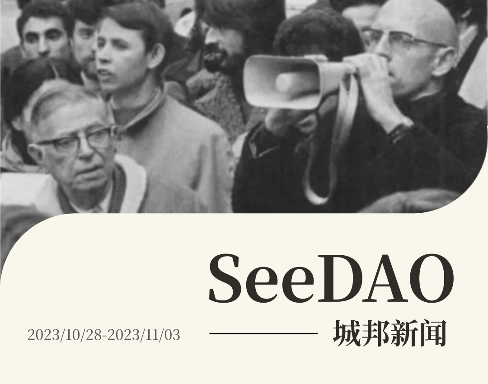
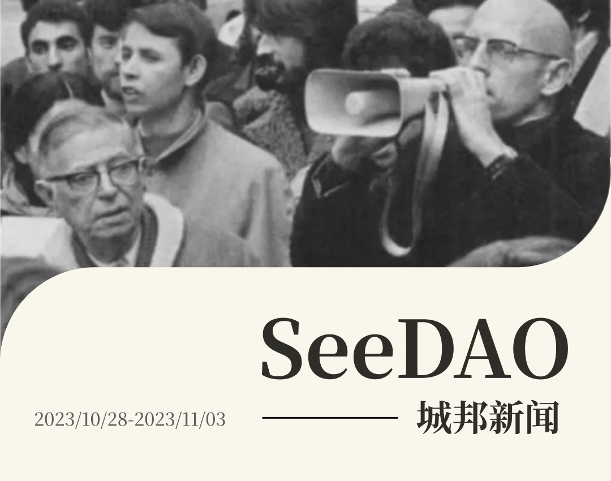
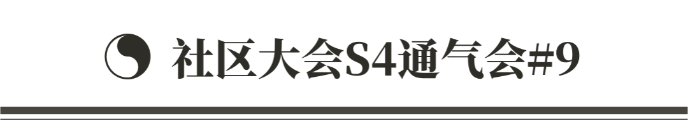
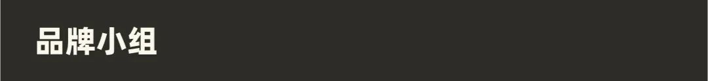
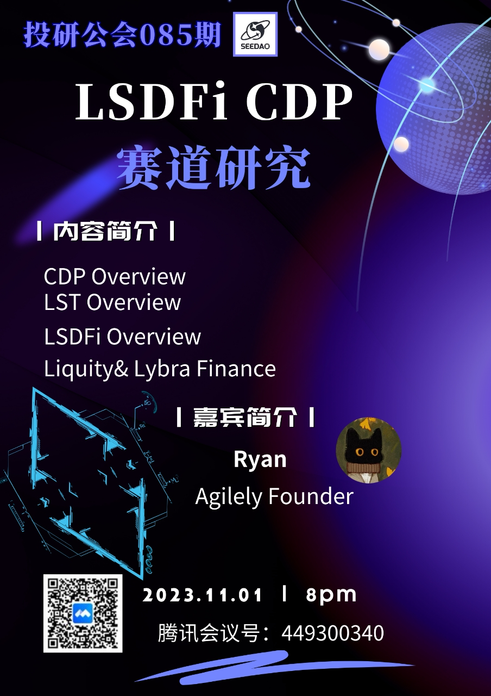
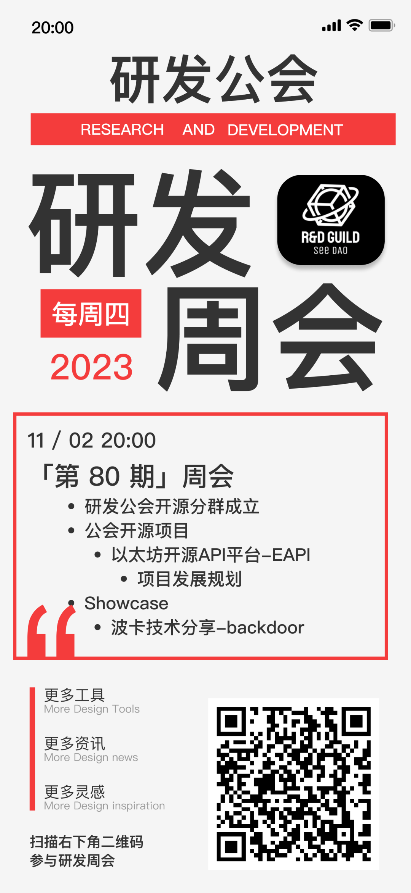

✦ 节点共识大会优化
✦ 社区大会分享申请审核、集成日历添加申请审核

✦ 20城联动｜邀请大家吃蛋糕！共庆 SeeDAO 两周岁 ！！
✦ 确定 古忆为 SeeDAO wiki 推进人
✦ 确定 Our Polis 大会时间为12.16，地点为在清迈古城，并协助推进伊斯坦布尔 coliving house 内容建设
✦ 明确城邦造物内容与 SeeDAO 品牌版权

✦ 拟定播客制作人招募需求
✦制作媒体资源申请表单
✦推特发布与 Chainbase 的合作推送
✦各平台推送 SeeDAO 衍生品大赛
✦JoyID 海报制作和设定 space
✦ CSS 播客录制&介绍 (探索web3精彩世界)
✦ 香港&桃园小型活动&co-working空间
✦ 12月中相约清迈，SeeDAO两周年生态发布会

✦ SeeDAO x Chainbase（黑客松宣发合作）
✦Seed 权益调研
✦SeeDAO x Secure3（项目合作商谈）
✦SeeDAO x NCC（大理数字游民大会，宣发合作）
✦ Notion 权限管控和使用- working
✦ SeeDAO 域名 +邮箱 管理规范 - pending
✦ 日常运维 - working
✦ OS App 对接日历 - Done
✦ OS App 对接悬赏酒馆 - Done
✦ 跟治理线配合 Notion Tally 连接 - Done

✦ 本周 P1、P2、P3 提案 无新增，无结项。


✦ 项目推进：翻译一本书，｜选书会 + 译者招募（有兴趣的小伙伴速来撩）🔥
✦ 正在筹备「译者团队」的首次交流会和选书会🔥
✦ 下周共学嘉宾 Saku
✦ 商讨 DCNews-bot 方案的初步评估和后续建议。
✦ SeeDAO造物活动 推介
✦ 翻译公会｜zircon《解锁无限可能性：NFT、AI 和 AR 如何革新当代艺术》

✦ 分享主题：LSDFi CDP｜稳定币赛道分析
/ 分享嘉宾：Ryan Lin｜Agilely Founder

✦ Backdoor 主题分享：波卡区块链技术
✦ Forever121 主题分享：以太坊开源API平台-EAPI
✦ 宣布：SeeDAO研发公会开源分群正式成立啦！
开源分群将致力于推动去中心化技术的发展，以社区为中心一起共创开源项目。首发项目：以太坊开源API平台-EAPI，贡献代码可获得SeeDAO积分奖励！快来一起挣积分！一起构建Web3！一起 Code to earn！

✦ SeeDAO 城邦造物大赛 AMA
✦ See U in Istanbul 客厅沙龙，限时报名

—